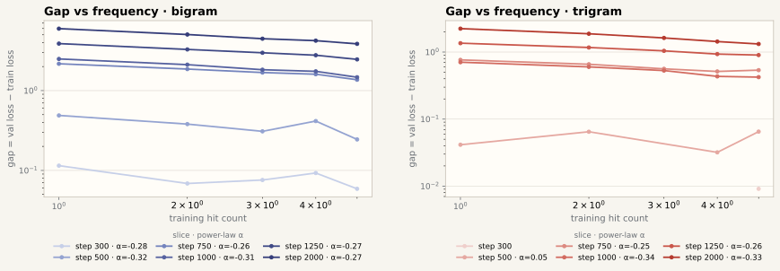
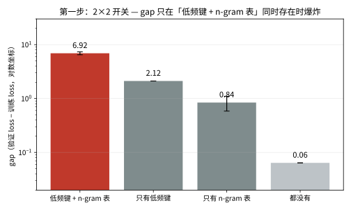
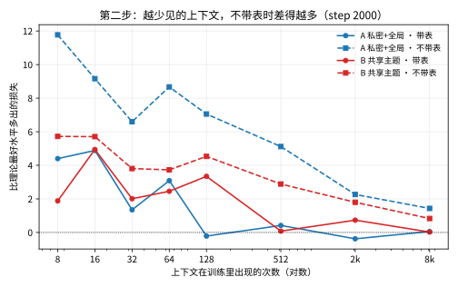
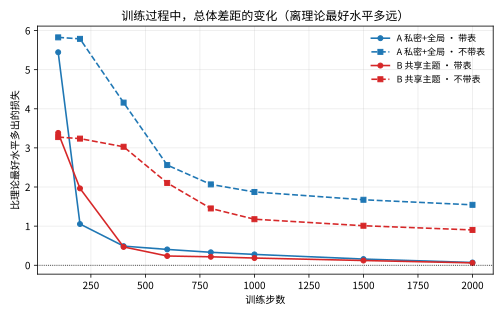

n-gram Gap：最小复现与机制证据
只问一个问题：在 vanilla nanoGPT 中，仅加入可训练的 bigram / trigram value memory，是否足以让固定顺序 replay 产生 train/val gap？这里把 setting、曲线和频率证据放在主线；术语、伪代码、debug 过程和历史分支放到背景页。
是的。n-gram table 在训练集上逐渐记住 context-specific value；固定顺序多 epoch replay 后，train loss 继续下降，而 val loss 在 epoch 边界后上升，形成 gap。
不把 current shell、Muon、RoPE 或复杂观测系统当作必要条件。用同一份 vanilla 模型，只改变 n-gram 的注入点，观察 gap 强弱是否随信号到达输出的方式变化。
1. 最小 setting
标准主线是 baseline_input。它对应最朴素的 over-encoding：先查 n-gram value，再加到 token embedding，后面运行普通 Transformer。
训练 shard 约 337 steps / epoch（2000 步约 6 个 epoch）；图中的竖线对应各 epoch 边界。三种注入点仅用于消融，不是三个不同的模型家族。
2. 核心结果：注入点改变 gap 强度
同一个 n-gram table 放在不同位置，得到不同的信号路径。y 直接绕过 attention 到达 residual stream；input 在最开始加入 embedding；v 则先进入 attention 的 value，再被权重混合。
n-gram 信号在 attention 之后加入，每层都能直接影响后续输出。
查表结果一次加到 wte；这是后续实验默认采用的最朴素 setting。
value residual 会被 attention 混合，且当前 norm 只有 V 的约 6.5%。
3. 训练曲线：epoch replay 后 train / val 分叉
input run 在 step 30 有一个单点离群（train loss 9.96、gap −2.60，仅 input 注入出现），绘制时从平滑线中剔除该点，其余原始点以半透明散点保留。
4. Loss、gap 与 table RMS 的时间对齐
将 input 主 setting 的 train loss、validation loss、global gap 与 n-gram table RMS 放在同一张图中，沿同一个 step 轴观察 table memory growth 是否先于或伴随 replay gap 出现。
完整 step 数据表（每 10 步一行 · 共 200 行，点击展开）
| step | v gap | y gap | input gap | v table RMS | y table RMS | input table RMS |
|---|
5. Frequency → gap：分 bin、Log-x 与 Log–log
这里不再画训练频次分布的 bar 或 cumulative fraction。主问题是：不同 training hit-count 的 context，最终对应多大的 train/validation gap。所有 gap 图都排除 novel：它在 train 中没有 token loss，不能定义标准的 val loss − train loss。


交互版仍可单独打开，支持切换 context branch、loss/gap 和 total contribution。


每条线 = 一个 step 切片，图例标注该切片的拟合幂律指数 α（log–log 最小二乘）。α 并不随 step 稳定：500–750 步最陡（bigram −0.44 → −0.56，trigram −0.47 → −0.68），之后逐渐变平，到 2000 步降为 bigram −0.27、trigram −0.33；step 300 时 trigram 还没有任何正 gap 桶，幂律尚未形成。novel、无有效 train/val 计数的桶和非正 gap 均排除。
6. Exact-frequency baseline：主结果
这里保留 collision-free exact trigram baseline 的完整分析报告。r(c) 只来自完整 train epoch 的真实 context count；hash bucket occupancy 不参与频率或 gap 定义。
7. 受控样本量复播：5-gram condition 下的 Transformer 与 MLP trunk 对照
ngram5_order5_sample285_v5_transformer_s42；MLP 臂因主线 code/train.py 尚未提供 position-wise MLP trunk，暂为 blocked，不能伪造结果。本节目标保持不变：使用真实文本 order=5（5-gram context），从完整 train/val controlled stream 中抽取固定样本量，使一个 epoch 为 285 steps；在完全相同的数据、频率索引、clean-table 与优化器口径下，仅比较 Transformer 与 position-wise MLP trunk。
待 order=5 双臂完成后再嵌入 loss/gap 曲线与逐频率表。目标 setting：vanilla nanoGPT 8L·6H·768D，input bigram+trigram 注入，R_bigram=R_trigram=1,048,576，RMSProp (0.0,0.99)，table LR scale 2.0，backbone LR 0.0006，warmup_constant 100 steps，seed 42，bf16，不 compile，online train loss 与 fixed validation loss 同 logged step 计算。
8. Toy model：在自己造的小世界里复现 gap
前面几节的实验都在真实文本上做。真实文本有两个麻烦：我们并不知道「下一个符号的规则」到底是什么，而且同时变化的变量太多。这一章我们干脆自己造一个小世界：规则由我们定，每个上下文该接什么、接的概率多大，全部已知；甚至还能算出「就算把规则完全告诉模型，它平均还是要猜错多少」——我们叫它理论最好水平。在这样的小世界里验证过的结论，就不再是真实数据里的巧合。
两个小实验，层层递进。第一个是 2×2 开关，证明 gap 的两个必要成分；第二个把规则改成「概率的」，量化模型离理论最好水平差多少、以及 n-gram 表能补多少。
8.1 第一步：2×2 开关（规则 100% 确定）
我们造了一个微型语言：32,768 条「前缀 → 下一个符号」的规则，规则由我们指定；训练文本和验证文本都按这些规则生成，训练时把训练集固定顺序反复重播（和前面真实实验一致）。关键设计是两个开关：
- 低频开关：一部分前缀在训练里只出现 1 / 2 / 4 / 8 次（低频）；它们训练时的接续和验证时的接续是独立随机抽取的——模型一旦把训练接续背下来，验证时这些前缀必然做错。另一部分前缀出现 16 次以上，训练和验证接同一个符号（背下来也无害）。
- 表开关：开 = 给模型一张「每个前缀在训练里见过多少次」的表；关 = 模型自己学。
| 低频前缀 | n-gram 表 | gap（验证 loss − 训练 loss） | 读法 |
|---|---|---|---|
| 有 | 有 | 6.92 | 表把训练侧的「巧合接续」背到近乎 0；验证侧换了接续，落差被放大 |
| 有 | 无 | 2.12 | 没有表时，模型自己也会去背巧合——这是底噪 |
| 无 | 有 | 0.84（核心前缀 ≈ 0.002） | 表背的是训练、验证都成立的规律，背得越熟越无害 |
| 无 | 无 | 0.06 | 干净基准：两个成分都没有，系统没有 gap |

一句话：低频 token 是燃料，n-gram 表是引擎；两者同时存在、固定顺序反复重播，gap 必然出现；去掉任何一个，gap 都大幅缓解。
8.2 第二步：规则是概率的（完全受控的小世界）
第一步里，每个上下文接什么符号是定死的；现实里的规则是「大概率」。第二步把规则改成概率分布，并加上一把尺子：理论最好水平——就算把规则完全告诉模型，预测下一个符号平均还是有一定的不确定性（规则越「乱」，下限越高）。我们报告「模型实际表现 − 理论最好水平」，叫它差距；差距越接近 0，说明模型越接近「完全懂规则」。
小世界设定：8,192 个符号；每 5 个符号一组叫「上下文」；给定上下文，下一个符号按一个固定概率规则产生。共 4,096 种上下文，训练里出现的次数从 8 次到 8,192 次不等。两种规则方案：
- 方案 A（私密 + 全局）：每个上下文主要指向它自己私有的 8 个符号，另加一点「全局常见符号」——像每家店主要卖自己的 8 种货，但也上一点大众货。
- 方案 B（共享主题 + 私密）：32 个「主题」共享一批符号，每个上下文按自己的比例混合这些主题，另加 4 个私有符号——像大家都从 32 个货架进货，但每家比例不同，还卖一点自营货。
| 方案 | 理论最好水平 | 带 n-gram 表 | 不带表 |
|---|---|---|---|
| A 私密 + 全局 | 2.57 | 2.64（差距 0.07） | 4.11（差距 1.55） |
| B 共享主题 | 4.39 | 4.45（差距 0.06） | 5.29（差距 0.90） |


A 与 B 的对比：B 的规则里大部分是「大家共享的主题」，不带表时也比 A 好（差距 0.90 vs 1.55）——说明「可以共享学习」的部分不产生 gap，「必须死记」的部分才产生 gap。
8.3 小世界告诉我们什么
- gap 的两个必要成分是低频 token + n-gram 表，缺一不可。
- 给模型一张「每个上下文在训练里见过多少次」的表，它就能达到理论最好水平（差距 ≈ 0.06–0.07）——低频 gap 是记忆机制本身造成的，不是数据噪声。
- 真实数据里的低频 gap（第 5、6 节）在完全可控的小世界里被精确复现，说明它不是真实文本特有的偶然现象。
9. 结论
- 最小充分条件：vanilla nanoGPT + bigram / trigram value table + fixed-order multi-epoch replay + 能到达输出的注入方式。
- 默认 setting：input / wte 注入。它简单、可解释，也最接近 over-encoding 这类 n-gram memory 用法。
- 注入点是强度变量，不是 gap 的来源变量：v、y、input 都能产生不同程度的现象；差别来自信号路径和尺度。
- 低频结构解释现象：table 在重复看到的 train context 上形成强烈的 train-specific value，而 novel / 低频 context 在 val 上暴露出这种记忆的局限。
- 小世界复现（第 8 节）：在完全受控的微型数据上，低频 token + n-gram 表仍是 gap 的充分条件；把「每个上下文见过多少次」直接喂给模型，它能达到理论最好水平。
背景、术语与 debug
展开背景说明（已拆到子文档）
如果你需要理解 gate、V / y / input 的伪代码、current shell 为什么是实验分支而不是必要变量，或早期 hash-row 频率统计为什么会把 novel trigram 错判成 seen，请阅读：